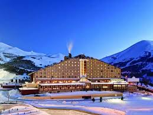
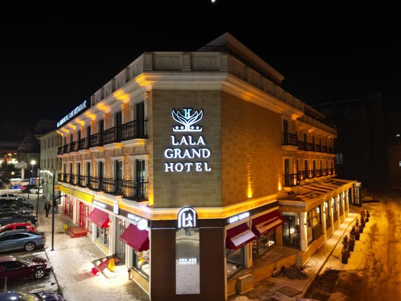
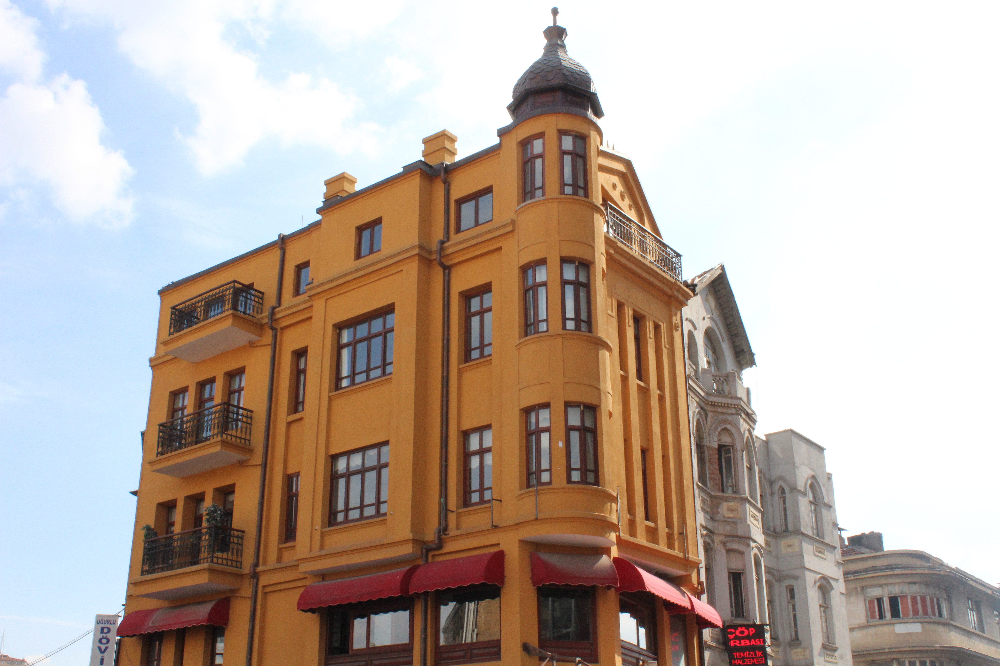

Kimler İçin? Kayak tutkunları ve lüks sevenler için.
Palandöken Dağı'nın yamacında yer alan bu oteller, sabah uyanır uyanmaz piste çıkma imkanı sunar. Gece kayağı ve şömine başı sohbetleri için birebir.

Kimler İçin? Kayak tutkunları ve lüks sevenler için.
Palandöken Dağı'nın yamacında yer alan bu oteller, sabah uyanır uyanmaz piste çıkma imkanı sunar. Gece kayağı ve şömine başı sohbetleri için birebir.

Kimler İçin? Gezilecek yerlere yakın olmak isteyenler için.
Cumhuriyet Caddesi ve çevresindeki oteller, tarihi mekanlara yürüme mesafesindedir. Hem konforlu hem de ulaşımı çok rahattır.

Kimler İçin? Kültürü iliklerine kadar hissetmek isteyenler için.
Restore edilmiş eski Erzurum evlerinde kalarak, taş duvarların ve ahşap tavanların sıcaklığında geçmişe yolculuk yapabilirsiniz.
Eğer kış sezonunda (Aralık - Mart) gidecekseniz, özellikle Palandöken otellerinde yer bulmak zor olabilir. Erken rezervasyon hayat (ve cüzdan) kurtarır!